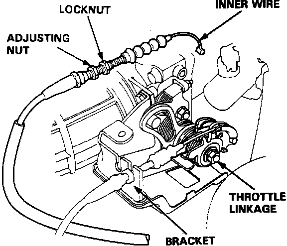
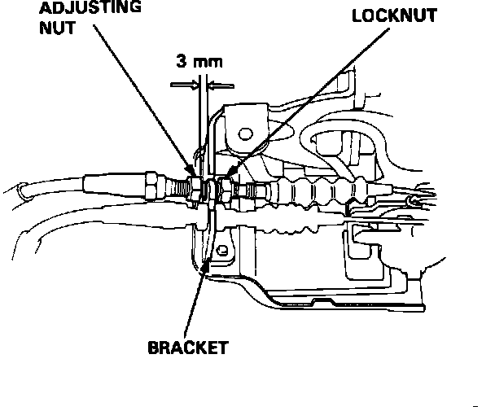

Throttle Cable/Linkage: Service and Repair
Throttle Cable Installation:

1. Loosen the cable locknut and remove the throttle cable from the cable bracket.
2. Remove the cable from the throttle linkage.
3. Remove the other end of the cable from the accelerator pedal.
4. Re-install in reverse order.
Throttle Cable Adjustment:

5. Hold the cable sheath, removing all slack from the cable.
6. Turn the adjusting nut until until it is 3 mm from the cable bracket.
7. Tighten the locknut. The cable deflection should now be:
0.39" - 0.47" (10 - 12 mm)
If not, re-adjust for proper deflection.
8. Press the accelerator pedal to the floor and check for full cable travel and wide-open throttle operation.
9. Release pedal and make sure that the throttle plate returns to the full-close position.